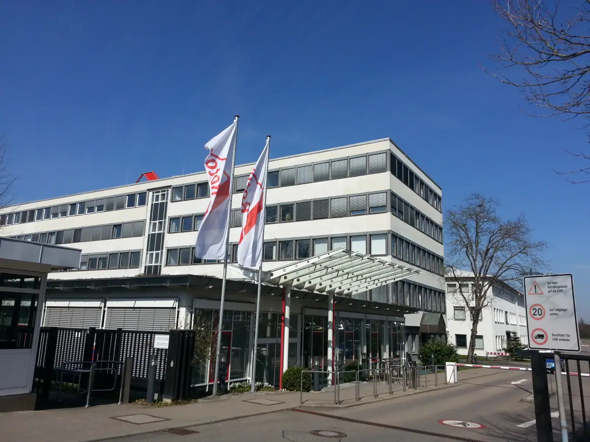
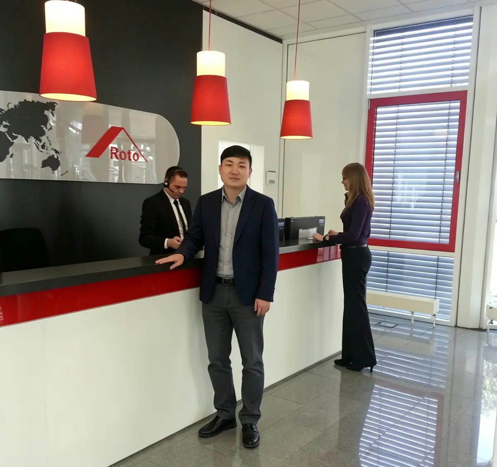
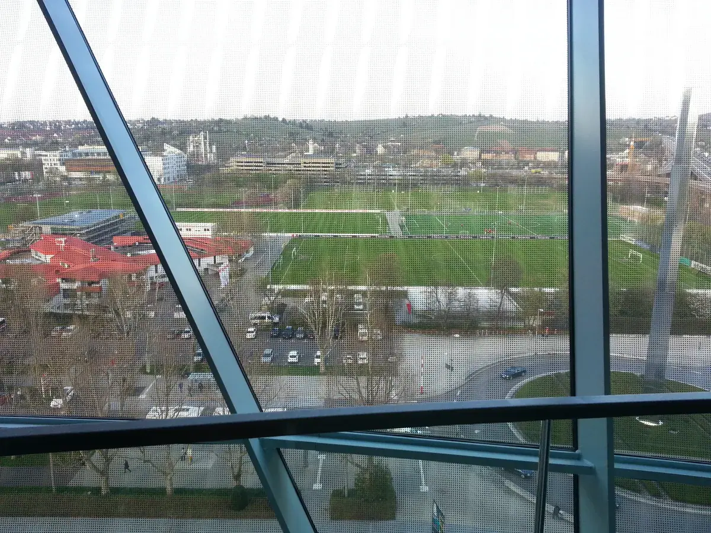
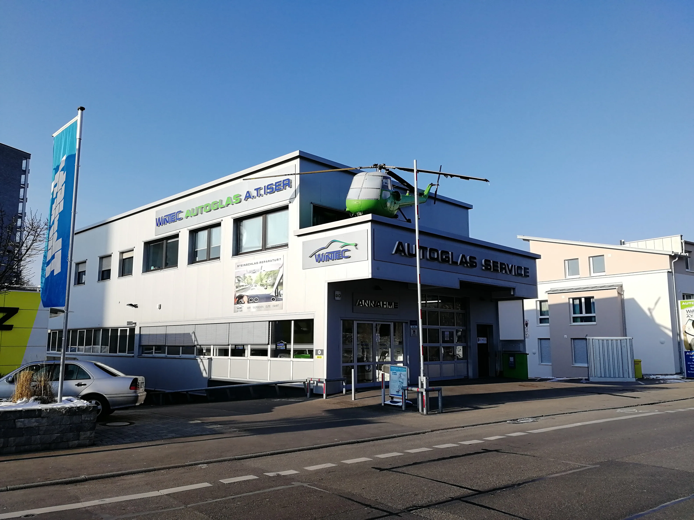

斯图加特：一座从"养马场"长出来的德国工业心脏
Stuttgart — how a 'stud farm' grew into Germany's industrial heart.

2014年，我第二次回到德国诺托（Roto）总部。
和2012年第一次去时带着一点"参观"的心态不同，这次，我已经是诺托中国区 General Manager。回总部开会、对接业务，是日常工作的一部分。
但这一次，有一行字让我记了很久。
在公司当年对外披露的经营展望中，诺托承认，原本被视为重要增长引擎的中国市场，已经"不再像过去那样顺畅"。俄罗斯市场则被形容为"完全无法预测"。
这不是来自外部观察者的猜测，而是企业自己对市场环境的判断。
对当时负责中国业务的我来说，这句话有分量。
因为我在中国业务中感受到的压力，并不是孤立的个体感受。总部也看到了市场正在发生变化。
当一家企业不再能依靠熟悉的市场环境轻松增长，它真正的考验才刚刚开始。
2014年，诺托没有靠一个新故事解决问题


先看一组当时的经营数据。
2013财年，诺托创下公司历史上的最高营收纪录：6.58亿欧元，超过了此前2011年的6.56亿欧元。管理层当时表示，公司在困难且难以预测的市场环境中，仍然取得了历史最佳业绩。
带着这样的成绩进入2014年，公司对外提出继续保持2%至5%的增长目标，同时也坦承市场风险正在上升。
这是一种值得注意的处境：上一年刚刚创下纪录，下一年却已经不能对市场的变化掉以轻心。
从产品端看，2014年的诺托并没有推出革命性的新系统。下一代五金系统Roto NX直到2017年才正式发布；密封件厂商Deventer集团则是在2015年被纳入旗下。
换句话说，2014年并不是一个适合讲"新产品改变一切"的年份。
更准确地说，这是一个需要稳住基本盘的年份。
当增长不再像过去那样顺畅，企业不能只期待下一款产品、下一个市场或下一轮机会来解决所有问题。效率、成本控制、日常经营管理，这些不那么容易成为新闻的工作，反而变得更加重要。
这也是我从那段经历中得到的一个感受：
企业经营中，有些年份负责创造纪录，有些年份负责守住纪录。后者同样考验一家公司的能力。
一家企业能否穿越周期，要看没有新故事的时候
很多人谈企业发展，喜欢关注几个时刻：推出了什么新产品，进入了什么新市场，取得了多大的增长，或者完成了怎样的重要突破。
这些当然重要。
但如果把目光放长，就会发现企业不可能每一年都处在高光时刻。
市场会变，客户需求会变，原本有效的增长方式也可能逐渐失灵。过去能够推动业绩的市场，未必永远保持同样的增长速度。
真正考验经营能力的，往往不是一切顺利的时候，而是熟悉的办法开始失效之后。
企业能不能及时识别变化？能不能在压力之下继续管理成本、提升效率？能不能避免因为短期增长放缓，就轻易否定原有积累？
这些问题没有新产品发布会那么热闹，却可能决定一家企业能走多远。
一家企业能不能穿越周期，不看它每年有没有新故事，看它在没有故事的年份里，能不能守住阵地。
——董立鑫，海鑫汇创始人兼执行总裁、新加坡世贸秘书长兼首席运营官
斯图加特的故事，也不是一夜之间发生的
诺托总部所在的斯图加特，是德国重要的工业城市。它今天与汽车制造、精密工业和科研创新紧密相连，但城市名字的来历，却与工业几乎没有关系。
"斯图加特"（Stuttgart）通常被认为源自古高地德语词汇"Stuotgarten"，意为马场或种马场。大约在公元10世纪，这里曾是与养马相关的聚落。
此后，斯图加特逐渐发展成为符腾堡地区的政治中心。几个世纪过去，这座城市的角色不断变化，最终成长为德国重要的工业与科研中心。
今天，戴姆勒、梅赛德斯-奔驰、保时捷和博世等企业，都与这座城市及周边区域有着深厚的联系。汽车、机械制造、工程技术和科研创新，构成了这里鲜明的产业特征。
从与养马有关的聚落，到今天的工业城市，斯图加特经历了漫长的发展过程。
它并不是因为某一次突破，就突然拥有了今天的产业地位。
这段城市历史让我想到企业的发展。
一家企业今天所拥有的技术、客户、供应链和市场地位，往往不是某一年突然建立起来的。它们来自长期积累，也来自面对环境变化时，一次次作出的选择。
增长可以在某个阶段加速，但能力需要时间沉淀。

从城市到企业，长期主义不是一句口号
把诺托的经营经历和斯图加特的产业发展放在一起看，我看到的是两种不同尺度上的相似之处。
企业需要面对市场周期，城市需要经历产业变迁。
当增长放缓时，企业要重新审视自己的经营方式；当原有产业格局发生变化时，城市也需要在既有基础上寻找新的发展空间。
它们都无法保证每一年都有令人兴奋的新故事。
但这并不意味着没有进步。
有时候，进步体现在管理效率的提升；有时候，体现在技术和产业能力的积累；还有时候，体现在环境发生变化之后，仍然能够保持方向，并为下一次机会做好准备。
这也是我从斯图加特这座城市，以及当年在诺托总部的工作经历中得到的启发：
真正能够穿越周期的，不一定是每一年都跑得最快的企业，而是能够在环境变化时稳住基本盘、持续积累能力，并为下一次增长做好准备的企业。
斯图加特从一个与养马有关的聚落，发展为德国重要的工业中心；诺托也需要在不同的市场环境中持续经营、应对变化。
两者的历史并不相同，但它们都提醒我：长期积累的价值，往往要等到环境发生变化时，才会显现出来。
对正在开拓海外市场的中国企业而言，这一点尤其值得思考。
出海不是进入一个新市场就意味着增长会自动发生。市场环境、客户需求和经营条件都可能变化。比起只关注眼前的增长，更重要的是建立能够适应变化的经营能力。
有些年份，企业的任务不是讲一个更大的故事，而是把手里的事情做好，为下一个阶段打下基础。
这同样是一种竞争力。
本文整理自董立鑫（Bruce Dong）海外产业考察记录，首发于海鑫汇。